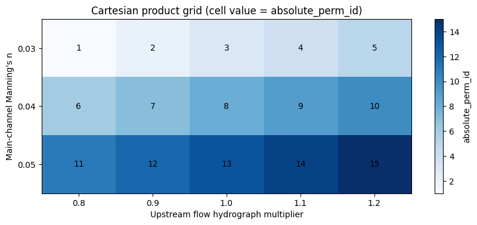
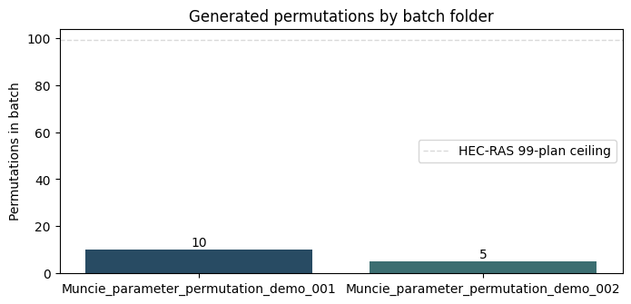
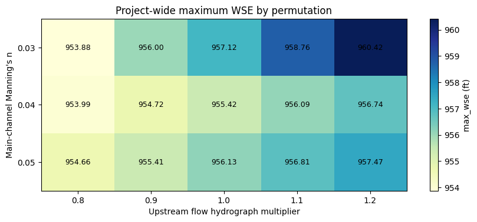
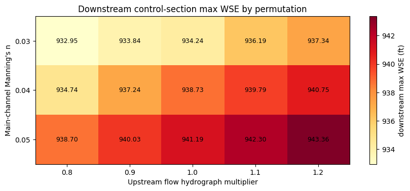
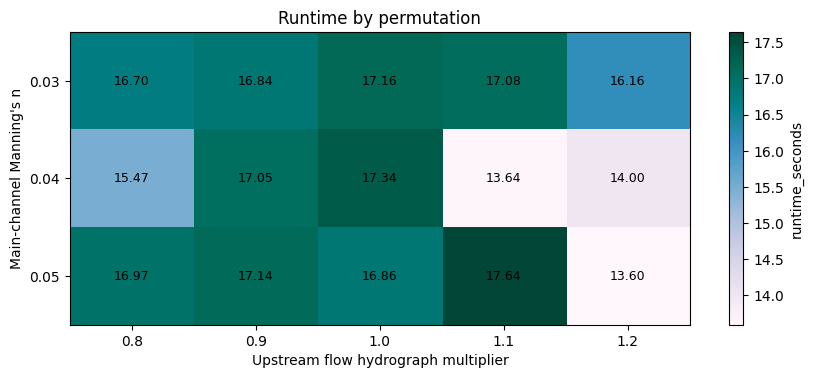

Parameter Permutation Sweeps with RasPermutation¶
Generate Cartesian products of parameter ranges, automatically partition into batch folders (respecting the 99-plan HEC-RAS limit), execute in parallel, and collect results into audit-friendly CSV logs.
from pathlib import Path
import sys
repo_root = Path.cwd()
if (
not (repo_root / "ras_commander").exists()
and (repo_root.parent / "ras_commander").exists()
):
repo_root = repo_root.parent
if str(repo_root) not in sys.path:
sys.path.insert(0, str(repo_root))
import ras_commander as ras_commander_pkg
from ras_commander import *
from ras_commander import RasPermutation, setup_logging
from ras_commander.hdf import HdfResultsXsec
import logging
import shutil
import time
import matplotlib.pyplot as plt
import numpy as np
import pandas as pd
from IPython.display import display
setup_logging(log_level=logging.WARNING)
logging.getLogger().setLevel(logging.WARNING)
logging.getLogger("ras_commander").setLevel(logging.WARNING)
plt.style.use("default")
pd.set_option("display.max_columns", 40)
pd.set_option("display.width", 140)
Setup & Project Extraction¶
Start with the reproducible Muncie example project, remove any old
permutation demo folders from prior runs, and inspect the existing
plans in ras.plan_df.
project_name = "Muncie"
working_root = repo_root / "working" / "114_parameter_permutation"
working_root.mkdir(parents=True, exist_ok=True)
suffix = "parameter_permutation_demo"
template_plan = "01"
try:
project_path = RasExamples.extract_project(
project_name,
output_path=working_root,
)
except RuntimeError as exc:
fallback_path = working_root / project_name
if (
"failed to delete existing folder" in str(exc).lower()
and fallback_path.exists()
):
project_path = fallback_path
print(
"Using the existing extracted project because "
"the working copy could not be deleted cleanly."
)
else:
raise
ras = init_ras_project(project_path, get_ras_exe("6.6"))
master_log_path = project_path.parent / (
f"{project_path.name}_{suffix}_master_log.csv"
)
for batch_folder in RasPermutation.discover_batch_folders(
project_path,
suffix=suffix,
):
shutil.rmtree(batch_folder, ignore_errors=True)
master_log_path.unlink(missing_ok=True)
available_slots = 99 - len(ras.plan_df)
template_plan_mask = (
ras.plan_df["plan_number"].astype(str).str.zfill(2)
== template_plan
)
plan_overview = (
ras.plan_df[["plan_number", "Plan Title", "Short Identifier"]]
.sort_values("plan_number")
.reset_index(drop=True)
)
template_plan_row = ras.plan_df.loc[template_plan_mask].iloc[0]
template_geom_number = str(
template_plan_row["geometry_number"]
).zfill(2)
template_unsteady_number = str(
template_plan_row["unsteady_number"]
).zfill(2)
template_geom_path = Path(template_plan_row["Geom Path"])
template_unsteady_path = Path(template_plan_row["Flow Path"])
cross_sections_df = GeomCrossSection.get_cross_sections(
template_geom_path,
river="White",
reach="Muncie",
)
valid_rs = []
base_mannings_by_rs = {}
for rs in cross_sections_df["RS"].astype(str):
try:
base_mannings_by_rs[rs] = GeomCrossSection.get_mannings_n(
template_geom_path,
"White",
"Muncie",
rs,
)
valid_rs.append(rs)
except ValueError:
continue
monitor_stations = {
"upstream_boundary": "15696.24",
"mid_reach": "14535.60",
"downstream_control": "237.6455",
}
base_channel_n = float(
base_mannings_by_rs[monitor_stations["mid_reach"]]
.loc[
lambda df: df["Subsection"] == "Channel",
"n_value",
]
.iloc[0]
)
assert project_path.exists(), "Example project extraction failed"
assert template_plan_mask.any(), "Template plan 01 must exist"
assert available_slots >= 15, "Need room for all 15 permutations"
assert len(valid_rs) == 61, "Expected 61 XS with Manning data"
assert all(
station in valid_rs for station in monitor_stations.values()
)
print(f"Project folder: {project_path}")
print(f"Working root: {working_root}")
print(
"Using ras_commander from: "
f"{Path(ras_commander_pkg.__file__).resolve()}"
)
print(f"Existing plans: {len(ras.plan_df)}")
print(
"Available new-plan slots before the 99-plan ceiling: "
f"{available_slots}"
)
print(f"Template geometry: g{template_geom_number}")
print(f"Template unsteady flow: u{template_unsteady_number}")
print(f"Valid XS with Manning data: {len(valid_rs)}")
print(f"Base main-channel n in the template plan: {base_channel_n:.2f}")
print(
"Monitoring stations: "
+ ", ".join(
f"{name}={station}"
for name, station in monitor_stations.items()
)
)
display(plan_overview)
display(
cross_sections_df[
["River", "Reach", "RS", "Length_Channel"]
].head()
)
Project folder: C:\GH\ras-commander\working\114_parameter_permutation\Muncie
Working root: C:\GH\ras-commander\working\114_parameter_permutation
Using ras_commander from: C:\GH\ras-commander\ras_commander\__init__.py
Existing plans: 3
Available new-plan slots before the 99-plan ceiling: 96
Template geometry: g01
Template unsteady flow: u01
Valid XS with Manning data: 61
Base main-channel n in the template plan: 0.04
Monitoring stations: upstream_boundary=15696.24, mid_reach=14535.60, downstream_control=237.6455
| plan_number | Plan Title | Short Identifier | |
|---|---|---|---|
| 0 | 01 | Unsteady Multi 9-SA run | 9-SAs |
| 1 | 03 | Unsteady Run with 2D 50ft Grid | 2D 50ft Grid |
| 2 | 04 | Unsteady Run with 2D 50ft User n Value R | 50ft User n Regions |
| River | Reach | RS | Length_Channel | |
|---|---|---|---|---|
| 0 | White | Muncie | 15696.24 | 210.73 |
| 1 | White | Muncie | 15485.51 | 115.09 |
| 2 | White | Muncie | 15370.43 | 165.14 |
| 3 | White | Muncie | 15205.29 | 192.09 |
| 4 | White | Muncie | 15013.20 | 95.84 |
Define Parameters¶
RasPermutation.define_parameters() accepts plain value lists and
RangeSpec objects. Here the sweep uses three Manning's n values
and five width values, which yields a 15-row Cartesian product with
a stable absolute_perm_id.
parameter_spec = {
"channel_n": [0.03, 0.04, 0.05],
"inflow_multiplier": [0.8, 0.9, 1.0, 1.1, 1.2],
}
expected_channel_n_values = [0.03, 0.04, 0.05]
expected_multiplier_values = [0.8, 0.9, 1.0, 1.1, 1.2]
parameters_df = RasPermutation.define_parameters(parameter_spec)
baseline_mask = (
np.isclose(parameters_df["channel_n"], base_channel_n)
& np.isclose(parameters_df["inflow_multiplier"], 1.0)
)
assert sorted(parameters_df["channel_n"].unique().tolist()) == (
expected_channel_n_values
)
assert sorted(
parameters_df["inflow_multiplier"].unique().tolist()
) == expected_multiplier_values
assert len(parameters_df) == 15
assert parameters_df["absolute_perm_id"].tolist() == list(
range(1, len(parameters_df) + 1)
)
assert not parameters_df[
["channel_n", "inflow_multiplier"]
].duplicated().any()
assert baseline_mask.sum() == 1
print(
f"{parameters_df['channel_n'].nunique()} channel roughness values x "
f"{parameters_df['inflow_multiplier'].nunique()} inflow multipliers = "
f"{len(parameters_df)} permutations"
)
print("Baseline case is channel_n=0.04 and inflow_multiplier=1.00")
display(parameters_df)
3 channel roughness values x 5 inflow multipliers = 15 permutations
Baseline case is channel_n=0.04 and inflow_multiplier=1.00
| absolute_perm_id | channel_n | inflow_multiplier | |
|---|---|---|---|
| 0 | 1 | 0.03 | 0.8 |
| 1 | 2 | 0.03 | 0.9 |
| 2 | 3 | 0.03 | 1.0 |
| 3 | 4 | 0.03 | 1.1 |
| 4 | 5 | 0.03 | 1.2 |
| 5 | 6 | 0.04 | 0.8 |
| 6 | 7 | 0.04 | 0.9 |
| 7 | 8 | 0.04 | 1.0 |
| 8 | 9 | 0.04 | 1.1 |
| 9 | 10 | 0.04 | 1.2 |
| 10 | 11 | 0.05 | 0.8 |
| 11 | 12 | 0.05 | 0.9 |
| 12 | 13 | 0.05 | 1.0 |
| 13 | 14 | 0.05 | 1.1 |
| 14 | 15 | 0.05 | 1.2 |
Cartesian Product Visualization¶
A compact way to see the sweep is to pivot the permutation table by
parameter values. Each heatmap cell corresponds to one row in the
permutation DataFrame, labeled by absolute_perm_id.
grid = parameters_df.pivot(
index="channel_n",
columns="inflow_multiplier",
values="absolute_perm_id",
)
display(grid)
fig, ax = plt.subplots(figsize=(10, 3.8))
image = ax.imshow(grid.values, cmap="Blues", aspect="auto")
ax.set_xticks(range(len(grid.columns)))
ax.set_xticklabels([f"{value:.1f}" for value in grid.columns])
ax.set_yticks(range(len(grid.index)))
ax.set_yticklabels([f"{value:.2f}" for value in grid.index])
ax.set_xlabel("Upstream flow hydrograph multiplier")
ax.set_ylabel("Main-channel Manning's n")
ax.set_title(
"Cartesian product grid (cell value = absolute_perm_id)"
)
for row_index in range(grid.shape[0]):
for col_index in range(grid.shape[1]):
ax.text(
col_index,
row_index,
int(grid.iloc[row_index, col_index]),
ha="center",
va="center",
color="black",
fontsize=10,
)
plt.colorbar(image, ax=ax, label="absolute_perm_id")
plt.show()
| inflow_multiplier | 0.8 | 0.9 | 1.0 | 1.1 | 1.2 |
|---|---|---|---|---|---|
| channel_n | |||||
| 0.03 | 1 | 2 | 3 | 4 | 5 |
| 0.04 | 6 | 7 | 8 | 9 | 10 |
| 0.05 | 11 | 12 | 13 | 14 | 15 |

Generate Plans¶
RasPermutation.generate_plans() clones the template plan, applies a
custom apply_fn, and writes both a master CSV and a per-batch CSV.
This notebook deliberately stops at plan generation and CSV tracking:
execute_and_summarize() is intentionally omitted because actual
HEC-RAS execution is slow.
HEC-RAS allows at most 99 plans per project. Muncie starts with 3
plans, so up to 96 new plans could fit in one cloned project. To make
the batch behavior visible in a small example, the demo sets
max_plans_per_batch=10, which forces 15 permutations into two batch
folders.
def project_stem(folder):
return next(folder.glob("*.prj")).stem
def component_path_from_df(df, number_column, number_value):
normalized_value = str(number_value).zfill(2)
mask = (
df[number_column].astype(str).str.zfill(2)
== normalized_value
)
row = df.loc[mask].iloc[0]
for column in ["full_path", "Geom Path", "Flow Path"]:
if column in row.index and pd.notna(row[column]):
return Path(row[column])
raise KeyError(
f"No path column found for {number_column}={normalized_value}"
)
def read_plan_reference(plan_path, key):
prefix = f"{key}="
for line in plan_path.read_text(
encoding="utf-8",
errors="ignore",
).splitlines():
if line.startswith(prefix):
return line.split("=", 1)[1].strip()
raise KeyError(f"{key} not found in {plan_path.name}")
def apply_permutation(plan_path, param_row, batch_ras):
plan_number = plan_path.suffix[-2:]
new_geom_number = RasPlan.clone_geom(
template_geom_number,
ras_object=batch_ras,
)
new_unsteady_number = RasPlan.clone_unsteady(
template_unsteady_number,
ras_object=batch_ras,
)
RasPlan.set_geom(
plan_number,
new_geom_number,
ras_object=batch_ras,
)
RasPlan.set_unsteady(
plan_number,
new_unsteady_number,
ras_object=batch_ras,
)
geom_path = component_path_from_df(
batch_ras.geom_df,
"geom_number",
new_geom_number,
)
unsteady_path = component_path_from_df(
batch_ras.unsteady_df,
"unsteady_number",
new_unsteady_number,
)
for rs in valid_rs:
mann_df = base_mannings_by_rs[rs].copy()
mann_df.loc[
mann_df["Subsection"] == "Channel",
"n_value",
] = float(param_row["channel_n"])
GeomCrossSection.set_mannings_n(
geom_path,
"White",
"Muncie",
rs,
mann_df[["Station", "n_value"]],
)
updated = RasUnsteady.update_flow_multiplier_by_station(
unsteady_path,
river_station=monitor_stations["upstream_boundary"],
new_multiplier=float(param_row["inflow_multiplier"]),
)
assert updated, "Expected upstream hydrograph multiplier update"
description = "\n".join(
[
"Executed parameter permutation demo",
f"absolute_perm_id={int(param_row['absolute_perm_id'])}",
f"channel_n={float(param_row['channel_n']):.3f}",
(
"inflow_multiplier="
f"{float(param_row['inflow_multiplier']):.2f}"
),
f"updated_cross_sections={len(valid_rs)}",
(
"boundary_station="
f"{monitor_stations['upstream_boundary']}"
),
]
)
RasPlan.update_plan_description(
plan_number,
description,
ras_object=batch_ras,
)
def permutation_plan_path(batch_folder, plan_number):
return batch_folder / (
f"{project_stem(batch_folder)}.p{int(plan_number):02d}"
)
plan_matrix = RasPermutation.generate_plans(
template_plan=template_plan,
parameters_df=parameters_df,
apply_fn=apply_permutation,
suffix=suffix,
max_plans_per_batch=10,
)
master_log_df = pd.read_csv(plan_matrix["master_log"])
first_batch_folder = plan_matrix["batch_folders"][0]
first_batch_log_path = first_batch_folder / "permutations_log.csv"
first_batch_log_df = pd.read_csv(first_batch_log_path)
batch_folder_lookup = {
folder.name: folder for folder in plan_matrix["batch_folders"]
}
expected_master_columns = [
"absolute_perm_id",
"batch_folder",
"batch_index",
"plan_number",
"short_id",
"plan_title",
"channel_n",
"inflow_multiplier",
]
generated_plan_paths = [
permutation_plan_path(
batch_folder_lookup[row.batch_folder],
row.plan_number,
)
for row in master_log_df.itertuples(index=False)
]
first_batch_rows = master_log_df.loc[
master_log_df["batch_folder"] == first_batch_folder.name
].reset_index(drop=True)
assert plan_matrix["total_permutations"] == len(parameters_df)
assert plan_matrix["master_log"] == master_log_path
assert plan_matrix["master_log"].exists()
assert len(plan_matrix["batch_folders"]) == plan_matrix["batches"]
assert master_log_df.columns.tolist() == expected_master_columns
assert len(master_log_df) == len(parameters_df)
assert master_log_df["absolute_perm_id"].tolist() == (
parameters_df["absolute_perm_id"].tolist()
)
assert master_log_df["absolute_perm_id"].is_unique
assert master_log_df["plan_number"].between(1, 99).all()
assert first_batch_log_path.exists()
assert len(first_batch_log_df) == len(first_batch_rows)
assert first_batch_log_df["absolute_perm_id"].tolist() == (
first_batch_rows["absolute_perm_id"].tolist()
)
for batch_folder in plan_matrix["batch_folders"]:
assert batch_folder.exists()
assert (batch_folder / f"{project_stem(batch_folder)}.prj").exists()
assert (batch_folder / "permutations_log.csv").exists()
assert all(path.exists() for path in generated_plan_paths)
first_generated_row = master_log_df.iloc[0]
first_generated_plan_path = generated_plan_paths[0]
first_generated_plan_text = first_generated_plan_path.read_text(
encoding="utf-8",
errors="ignore",
)
for expected_line in [
"Executed parameter permutation demo",
(
"absolute_perm_id="
f"{int(first_generated_row['absolute_perm_id'])}"
),
f"channel_n={first_generated_row['channel_n']:.3f}",
(
"inflow_multiplier="
f"{first_generated_row['inflow_multiplier']:.2f}"
),
f"updated_cross_sections={len(valid_rs)}",
]:
assert expected_line in first_generated_plan_text
first_geom_ref = read_plan_reference(
first_generated_plan_path,
"Geom File",
)
first_flow_ref = read_plan_reference(
first_generated_plan_path,
"Flow File",
)
assert first_geom_ref != f"g{template_geom_number}"
assert first_flow_ref != f"u{template_unsteady_number}"
first_geom_path = first_batch_folder / (
f"{project_stem(first_batch_folder)}.{first_geom_ref}"
)
first_unsteady_path = first_batch_folder / (
f"{project_stem(first_batch_folder)}.{first_flow_ref}"
)
assert first_geom_path.exists()
assert first_unsteady_path.exists()
first_geom_mann_df = GeomCrossSection.get_mannings_n(
first_geom_path,
"White",
"Muncie",
monitor_stations["downstream_control"],
)
first_channel_n = float(
first_geom_mann_df.loc[
first_geom_mann_df["Subsection"] == "Channel",
"n_value",
].iloc[0]
)
assert np.isclose(first_channel_n, first_generated_row["channel_n"])
first_unsteady_text = first_unsteady_path.read_text(
encoding="utf-8",
errors="ignore",
)
expected_qmult = (
"Flow Hydrograph QMult= "
f"{float(first_generated_row['inflow_multiplier'])}"
)
assert expected_qmult in first_unsteady_text
print(f"Master log: {plan_matrix['master_log'].name}")
print(
"Batch folders: "
f"{[folder.name for folder in plan_matrix['batch_folders']]}"
)
print(f"Total permutations: {plan_matrix['total_permutations']}")
print(f"Batch count: {plan_matrix['batches']}")
print(f"First generated plan: {first_generated_plan_path.name}")
print(
f"First generated geometry clone: {first_geom_path.name} "
f"(channel_n={first_channel_n:.3f})"
)
print(
"First generated unsteady clone: "
f"{first_unsteady_path.name} ({expected_qmult})"
)
print()
print("Master log preview")
display(master_log_df.head())
print("First batch log preview")
display(first_batch_log_df.head())
Master log: Muncie_parameter_permutation_demo_master_log.csv
Batch folders: ['Muncie_parameter_permutation_demo_001', 'Muncie_parameter_permutation_demo_002']
Total permutations: 15
Batch count: 2
First generated plan: Muncie.p02
First generated geometry clone: Muncie.g03 (channel_n=0.030)
First generated unsteady clone: Muncie.u02 (Flow Hydrograph QMult= 0.8)
Master log preview
| absolute_perm_id | batch_folder | batch_index | plan_number | short_id | plan_title | channel_n | inflow_multiplier | |
|---|---|---|---|---|---|---|---|---|
| 0 | 1 | Muncie_parameter_permutation_demo_001 | 1 | 2 | 9-SASP00001 | Unsteady Multi 9-SA run Perm 00001 | 0.03 | 0.8 |
| 1 | 2 | Muncie_parameter_permutation_demo_001 | 1 | 5 | 9-SASP00002 | Unsteady Multi 9-SA run Perm 00002 | 0.03 | 0.9 |
| 2 | 3 | Muncie_parameter_permutation_demo_001 | 1 | 6 | 9-SASP00003 | Unsteady Multi 9-SA run Perm 00003 | 0.03 | 1.0 |
| 3 | 4 | Muncie_parameter_permutation_demo_001 | 1 | 7 | 9-SASP00004 | Unsteady Multi 9-SA run Perm 00004 | 0.03 | 1.1 |
| 4 | 5 | Muncie_parameter_permutation_demo_001 | 1 | 8 | 9-SASP00005 | Unsteady Multi 9-SA run Perm 00005 | 0.03 | 1.2 |
First batch log preview
| absolute_perm_id | plan_number | plan_title | channel_n | inflow_multiplier | |
|---|---|---|---|---|---|
| 0 | 1 | 2 | Unsteady Multi 9-SA run Perm 00001 | 0.03 | 0.8 |
| 1 | 2 | 5 | Unsteady Multi 9-SA run Perm 00002 | 0.03 | 0.9 |
| 2 | 3 | 6 | Unsteady Multi 9-SA run Perm 00003 | 0.03 | 1.0 |
| 3 | 4 | 7 | Unsteady Multi 9-SA run Perm 00004 | 0.03 | 1.1 |
| 4 | 5 | 8 | Unsteady Multi 9-SA run Perm 00005 | 0.03 | 1.2 |
Batch Folder Organization¶
The master log tracks every permutation across all batch folders,
while each batch folder keeps its own local permutations_log.csv.
The tree preview below makes the folder layout explicit.
effective_batch_size = min(99, 10, available_slots)
expected_batches = -(-len(parameters_df) // effective_batch_size)
full_batches, remainder = divmod(
len(parameters_df),
effective_batch_size,
)
expected_batch_sizes = [effective_batch_size] * full_batches
if remainder:
expected_batch_sizes.append(remainder)
print(
"Effective batch size = min(99 plan ceiling, "
f"10 requested, {available_slots} available slots) = "
f"{effective_batch_size}"
)
print()
master_preview = "\n".join(
plan_matrix["master_log"].read_text(
encoding="utf-8"
).splitlines()[:6]
)
batch_preview = "\n".join(
first_batch_log_path.read_text(
encoding="utf-8"
).splitlines()[:6]
)
print("Master CSV preview")
print(master_preview)
print()
print("Per-batch CSV preview")
print(batch_preview)
def render_batch_tree(batch_folder):
lines = [f"{batch_folder.name}/"]
for path in sorted(batch_folder.iterdir()):
suffix = path.suffix.lower()
is_plan_file = (
len(suffix) == 4
and suffix.startswith(".p")
and suffix[2:].isdigit()
)
is_geom_file = (
len(suffix) == 4
and suffix.startswith(".g")
and suffix[2:].isdigit()
)
is_unsteady_file = (
len(suffix) == 4
and suffix.startswith(".u")
and suffix[2:].isdigit()
)
if path.is_dir() and path.name == "GIS_Data":
lines.append(f" {path.name}/")
elif (
path.name == "permutations_log.csv"
or suffix == ".prj"
or is_plan_file
or is_geom_file
or is_unsteady_file
):
lines.append(f" {path.name}")
return "\n".join(lines)
for batch_folder in plan_matrix["batch_folders"]:
print()
print(render_batch_tree(batch_folder))
batch_counts = (
master_log_df.groupby("batch_folder").size().sort_index()
)
assert plan_matrix["batches"] == expected_batches
assert batch_counts.tolist() == expected_batch_sizes
assert batch_counts.sum() == len(parameters_df)
assert batch_counts.max() <= effective_batch_size
fig, ax = plt.subplots(figsize=(8, 3.5))
bars = ax.bar(
batch_counts.index,
batch_counts.values,
color=["#284b63", "#3c6e71"],
)
ax.axhline(
99,
color="#d9d9d9",
linestyle="--",
linewidth=1,
label="HEC-RAS 99-plan ceiling",
)
ax.set_ylabel("Permutations in batch")
ax.set_title("Generated permutations by batch folder")
ax.legend()
for bar, count in zip(bars, batch_counts.values):
ax.text(
bar.get_x() + bar.get_width() / 2,
bar.get_height() + 0.2,
str(int(count)),
ha="center",
va="bottom",
)
plt.xticks(rotation=0)
plt.show()
Effective batch size = min(99 plan ceiling, 10 requested, 96 available slots) = 10
Master CSV preview
absolute_perm_id,batch_folder,batch_index,plan_number,short_id,plan_title,channel_n,inflow_multiplier
1,Muncie_parameter_permutation_demo_001,1,02,9-SASP00001,Unsteady Multi 9-SA run Perm 00001,0.03,0.8
2,Muncie_parameter_permutation_demo_001,1,05,9-SASP00002,Unsteady Multi 9-SA run Perm 00002,0.03,0.9
3,Muncie_parameter_permutation_demo_001,1,06,9-SASP00003,Unsteady Multi 9-SA run Perm 00003,0.03,1.0
4,Muncie_parameter_permutation_demo_001,1,07,9-SASP00004,Unsteady Multi 9-SA run Perm 00004,0.03,1.1
5,Muncie_parameter_permutation_demo_001,1,08,9-SASP00005,Unsteady Multi 9-SA run Perm 00005,0.03,1.2
Per-batch CSV preview
absolute_perm_id,plan_number,plan_title,channel_n,inflow_multiplier
1,02,Unsteady Multi 9-SA run Perm 00001,0.03,0.8
2,05,Unsteady Multi 9-SA run Perm 00002,0.03,0.9
3,06,Unsteady Multi 9-SA run Perm 00003,0.03,1.0
4,07,Unsteady Multi 9-SA run Perm 00004,0.03,1.1
5,08,Unsteady Multi 9-SA run Perm 00005,0.03,1.2
Muncie_parameter_permutation_demo_001/
GIS_Data/
Muncie.g01
Muncie.g02
Muncie.g03
Muncie.g04
Muncie.g05
Muncie.g06
Muncie.g07
Muncie.g08
Muncie.g09
Muncie.g10
Muncie.g11
Muncie.g12
Muncie.g13
Muncie.p01
Muncie.p02
Muncie.p03
Muncie.p04
Muncie.p05
Muncie.p06
Muncie.p07
Muncie.p08
Muncie.p09
Muncie.p10
Muncie.p11
Muncie.p12
Muncie.p13
Muncie.prj
Muncie.u01
Muncie.u02
Muncie.u03
Muncie.u04
Muncie.u05
Muncie.u06
Muncie.u07
Muncie.u08
Muncie.u09
Muncie.u10
Muncie.u11
permutations_log.csv
Muncie_parameter_permutation_demo_002/
GIS_Data/
Muncie.g01
Muncie.g02
Muncie.g03
Muncie.g04
Muncie.g05
Muncie.g06
Muncie.g07
Muncie.g08
Muncie.p01
Muncie.p02
Muncie.p03
Muncie.p04
Muncie.p05
Muncie.p06
Muncie.p07
Muncie.p08
Muncie.prj
Muncie.u01
Muncie.u02
Muncie.u03
Muncie.u04
Muncie.u05
Muncie.u06
permutations_log.csv

Discover Batch Folders¶
RasPermutation.discover_batch_folders() is useful when you want to
resume work from an existing sweep folder without regenerating plans.
It finds folders that follow the {project}_{suffix}_{NNN} naming
convention and returns them in numeric order.
discovered_batches = RasPermutation.discover_batch_folders(
project_path,
suffix=suffix,
)
print("Discovered batch folders:")
for folder in discovered_batches:
print(f"- {folder}")
batch_summary = (
master_log_df.groupby("batch_folder")["absolute_perm_id"]
.agg(["min", "max", "count"])
)
expected_summary_rows = []
next_perm_id = 1
for batch_folder_name, count in batch_counts.items():
expected_summary_rows.append(
{
"batch_folder": batch_folder_name,
"min": next_perm_id,
"max": next_perm_id + count - 1,
"count": count,
}
)
next_perm_id += count
expected_batch_summary = pd.DataFrame(
expected_summary_rows
).set_index("batch_folder")
display(batch_summary)
assert discovered_batches == plan_matrix["batch_folders"]
assert batch_summary.equals(expected_batch_summary)
assert batch_summary["count"].sum() == len(parameters_df)
Discovered batch folders:
- C:\GH\ras-commander\working\114_parameter_permutation\Muncie_parameter_permutation_demo_001
- C:\GH\ras-commander\working\114_parameter_permutation\Muncie_parameter_permutation_demo_002
| min | max | count | |
|---|---|---|---|
| batch_folder | |||
| Muncie_parameter_permutation_demo_001 | 1 | 10 | 10 |
| Muncie_parameter_permutation_demo_002 | 11 | 15 | 5 |
Execute All Permutations¶
execution_max_workers = 4
execution_num_cores = 2
start_time = time.perf_counter()
executed_df = RasPermutation.execute_and_summarize(
plan_matrix,
max_workers=execution_max_workers,
num_cores=execution_num_cores,
ras_object=ras,
)
wall_clock_seconds = time.perf_counter() - start_time
assert len(executed_df) == len(parameters_df)
assert set(executed_df["status"]) == {"completed"}
assert executed_df["runtime_seconds"].notna().all()
assert executed_df["max_wse"].notna().all()
assert executed_df["hdf_path"].notna().all()
assert executed_df["hdf_path"].map(
lambda value: Path(value).exists()
).all()
total_worker_runtime_seconds = executed_df["runtime_seconds"].sum()
print(
f"Executed {len(executed_df)} permutations with "
f"{execution_max_workers} workers x "
f"{execution_num_cores} cores per worker."
)
print(f"Wall-clock runtime: {wall_clock_seconds:.1f} seconds")
print(
"Summed per-plan runtime from HEC-RAS metadata: "
f"{total_worker_runtime_seconds:.1f} seconds"
)
display(
executed_df[
[
"absolute_perm_id",
"plan_number",
"channel_n",
"inflow_multiplier",
"status",
"max_wse",
"runtime_seconds",
]
]
)
Executed 15 permutations with 4 workers x 2 cores per worker.
Wall-clock runtime: 113.7 seconds
Summed per-plan runtime from HEC-RAS metadata: 243.6 seconds
| absolute_perm_id | plan_number | channel_n | inflow_multiplier | status | max_wse | runtime_seconds | |
|---|---|---|---|---|---|---|---|
| 0 | 1 | 2 | 0.03 | 0.8 | completed | 953.876709 | 16.703 |
| 1 | 2 | 5 | 0.03 | 0.9 | completed | 956.004578 | 16.844 |
| 2 | 3 | 6 | 0.03 | 1.0 | completed | 957.117798 | 17.155 |
| 3 | 4 | 7 | 0.03 | 1.1 | completed | 958.757568 | 17.078 |
| 4 | 5 | 8 | 0.03 | 1.2 | completed | 960.415710 | 16.156 |
| 5 | 6 | 9 | 0.04 | 0.8 | completed | 953.988770 | 15.468 |
| 6 | 7 | 10 | 0.04 | 0.9 | completed | 954.720398 | 17.047 |
| 7 | 8 | 11 | 0.04 | 1.0 | completed | 955.419312 | 17.344 |
| 8 | 9 | 12 | 0.04 | 1.1 | completed | 956.090271 | 13.641 |
| 9 | 10 | 13 | 0.04 | 1.2 | completed | 956.736267 | 14.001 |
| 10 | 11 | 2 | 0.05 | 0.8 | completed | 954.659485 | 16.969 |
| 11 | 12 | 5 | 0.05 | 0.9 | completed | 955.410828 | 17.141 |
| 12 | 13 | 6 | 0.05 | 1.0 | completed | 956.125427 | 16.859 |
| 13 | 14 | 7 | 0.05 | 1.1 | completed | 956.809326 | 17.641 |
| 14 | 15 | 8 | 0.05 | 1.2 | completed | 957.466064 | 13.595 |
Compile Results and Autonomous Analysis¶
analysis_rows = []
for row in executed_df.itertuples(index=False):
hdf_path = Path(row.hdf_path)
xsec_ds = HdfResultsXsec.get_xsec_timeseries(hdf_path)
station_lookup = {
str(station): index
for index, station in enumerate(
xsec_ds["Station"].values.tolist()
)
}
analysis_row = {
"absolute_perm_id": row.absolute_perm_id,
}
for label, station in monitor_stations.items():
station_index = station_lookup[station]
analysis_row[f"{label}_max_wse"] = float(
xsec_ds["Maximum_Water_Surface"].values[station_index]
)
analysis_row[f"{label}_max_flow"] = float(
xsec_ds["Maximum_Flow"].values[station_index]
)
analysis_rows.append(analysis_row)
compiled_metrics_df = pd.DataFrame(analysis_rows)
compiled_results_df = (
executed_df.merge(
compiled_metrics_df,
on="absolute_perm_id",
how="left",
)
.sort_values(["channel_n", "inflow_multiplier"])
.reset_index(drop=True)
)
baseline_mask = (
np.isclose(compiled_results_df["channel_n"], base_channel_n)
& np.isclose(compiled_results_df["inflow_multiplier"], 1.0)
)
assert baseline_mask.sum() == 1
baseline_row = compiled_results_df.loc[baseline_mask].iloc[0]
baseline_upstream_peak_cfs = float(
baseline_row["upstream_boundary_max_flow"]
)
compiled_results_df["expected_upstream_peak_flow"] = (
baseline_upstream_peak_cfs
* compiled_results_df["inflow_multiplier"]
)
compiled_results_df["upstream_peak_flow_error_cfs"] = (
compiled_results_df["upstream_boundary_max_flow"]
- compiled_results_df["expected_upstream_peak_flow"]
)
assert (
compiled_results_df["upstream_peak_flow_error_cfs"].abs().max()
< 5.0
)
for column in [
"max_wse",
"mid_reach_max_wse",
"downstream_control_max_wse",
"runtime_seconds",
]:
compiled_results_df[f"delta_{column}"] = (
compiled_results_df[column] - float(baseline_row[column])
)
compiled_results_path = plan_matrix["master_log"].with_name(
plan_matrix["master_log"].stem + "_compiled_results.csv"
)
compiled_results_df.to_csv(compiled_results_path, index=False)
print(f"Compiled results saved to: {compiled_results_path}")
display(
compiled_results_df[
[
"absolute_perm_id",
"channel_n",
"inflow_multiplier",
"max_wse",
"mid_reach_max_wse",
"downstream_control_max_wse",
"upstream_boundary_max_flow",
"runtime_seconds",
]
]
)
global_pivot = compiled_results_df.pivot(
index="channel_n",
columns="inflow_multiplier",
values="max_wse",
)
downstream_pivot = compiled_results_df.pivot(
index="channel_n",
columns="inflow_multiplier",
values="downstream_control_max_wse",
)
runtime_pivot = compiled_results_df.pivot(
index="channel_n",
columns="inflow_multiplier",
values="runtime_seconds",
)
def plot_heatmap(pivot_df, title, colorbar_label, cmap):
fig, ax = plt.subplots(figsize=(10, 3.8))
image = ax.imshow(pivot_df.values, cmap=cmap, aspect="auto")
ax.set_xticks(range(len(pivot_df.columns)))
ax.set_xticklabels(
[f"{value:.1f}" for value in pivot_df.columns]
)
ax.set_yticks(range(len(pivot_df.index)))
ax.set_yticklabels(
[f"{value:.2f}" for value in pivot_df.index]
)
ax.set_xlabel("Upstream flow hydrograph multiplier")
ax.set_ylabel("Main-channel Manning's n")
ax.set_title(title)
for row_index in range(pivot_df.shape[0]):
for col_index in range(pivot_df.shape[1]):
ax.text(
col_index,
row_index,
f"{pivot_df.iloc[row_index, col_index]:.2f}",
ha="center",
va="center",
color="black",
fontsize=9,
)
plt.colorbar(image, ax=ax, label=colorbar_label)
plt.show()
plot_heatmap(
global_pivot,
"Project-wide maximum WSE by permutation",
"max_wse (ft)",
"YlGnBu",
)
plot_heatmap(
downstream_pivot,
"Downstream control-section max WSE by permutation",
"downstream max WSE (ft)",
"YlOrRd",
)
plot_heatmap(
runtime_pivot,
"Runtime by permutation",
"runtime_seconds",
"PuBuGn",
)
ranked_df = compiled_results_df.sort_values(
["downstream_control_max_wse", "runtime_seconds"],
ascending=[False, True],
).reset_index(drop=True)
downstream_monotonic_by_multiplier = (
compiled_results_df.sort_values("inflow_multiplier")
.groupby("channel_n")["downstream_control_max_wse"]
.apply(lambda series: series.is_monotonic_increasing)
.all()
)
downstream_monotonic_by_roughness = (
compiled_results_df.sort_values("channel_n")
.groupby("inflow_multiplier")["downstream_control_max_wse"]
.apply(lambda series: series.is_monotonic_increasing)
.all()
)
global_monotonic_by_roughness = (
compiled_results_df.sort_values("channel_n")
.groupby("inflow_multiplier")["max_wse"]
.apply(lambda series: series.is_monotonic_increasing)
.all()
)
mean_runtime_by_channel_n = (
compiled_results_df.groupby("channel_n")["runtime_seconds"]
.mean()
.sort_index()
)
highest_global = compiled_results_df.loc[
compiled_results_df["max_wse"].idxmax()
]
highest_downstream = compiled_results_df.loc[
compiled_results_df["downstream_control_max_wse"].idxmax()
]
fastest_case = compiled_results_df.loc[
compiled_results_df["runtime_seconds"].idxmin()
]
print("Autonomous interpretation")
print(
f"- All {len(compiled_results_df)} permutations completed successfully."
)
print(
"- Increasing the inflow multiplier increased the downstream "
"control-section WSE in every roughness slice: "
f"{downstream_monotonic_by_multiplier}."
)
print(
"- Increasing channel roughness increased the downstream "
"control-section WSE in every inflow slice: "
f"{downstream_monotonic_by_roughness}."
)
runtime_summary = ", ".join(
f"{channel_n:.2f} -> {runtime_value:.1f}s"
for channel_n, runtime_value in mean_runtime_by_channel_n.items()
)
runtime_spread = (
compiled_results_df["runtime_seconds"].max()
- compiled_results_df["runtime_seconds"].min()
)
print(
"- Runtime was sensitive but not strictly monotonic with "
f"roughness in this small sweep ({runtime_summary}; spread "
f"{runtime_spread:.1f}s). That suggests worker scheduling and "
"pre/post-processing overhead are still visible at this model "
"size."
)
print(
"- The project-wide max WSE was not strictly monotonic with "
"roughness across all inflow multipliers: "
f"{global_monotonic_by_roughness}. "
"That suggests the controlling global maximum shifts location, "
"so the downstream control section is the clearer sensitivity "
"metric for this sweep."
)
print(
"- Highest project-wide max WSE: "
f"n={highest_global['channel_n']:.2f}, "
f"multiplier={highest_global['inflow_multiplier']:.1f}, "
f"max_wse={highest_global['max_wse']:.2f} ft."
)
print(
"- Highest downstream control-section WSE: "
f"n={highest_downstream['channel_n']:.2f}, "
f"multiplier={highest_downstream['inflow_multiplier']:.1f}, "
f"downstream_max_wse="
f"{highest_downstream['downstream_control_max_wse']:.2f} ft."
)
print(
"- Fastest run: "
f"n={fastest_case['channel_n']:.2f}, "
f"multiplier={fastest_case['inflow_multiplier']:.1f}, "
f"runtime={fastest_case['runtime_seconds']:.1f} seconds."
)
display(
ranked_df[
[
"absolute_perm_id",
"channel_n",
"inflow_multiplier",
"max_wse",
"downstream_control_max_wse",
"runtime_seconds",
"delta_downstream_control_max_wse",
]
].head(10)
)
Compiled results saved to: C:\GH\ras-commander\working\114_parameter_permutation\Muncie_parameter_permutation_demo_master_log_compiled_results.csv
| absolute_perm_id | channel_n | inflow_multiplier | max_wse | mid_reach_max_wse | downstream_control_max_wse | upstream_boundary_max_flow | runtime_seconds | |
|---|---|---|---|---|---|---|---|---|
| 0 | 1 | 0.03 | 0.8 | 953.876709 | 952.606812 | 932.948853 | 16800.0 | 16.703 |
| 1 | 2 | 0.03 | 0.9 | 956.004578 | 955.113892 | 933.841370 | 18900.0 | 16.844 |
| 2 | 3 | 0.03 | 1.0 | 957.117798 | 956.246826 | 934.244141 | 21000.0 | 17.155 |
| 3 | 4 | 0.03 | 1.1 | 958.757568 | 957.991699 | 936.185120 | 23100.0 | 17.078 |
| 4 | 5 | 0.03 | 1.2 | 960.415710 | 959.721680 | 937.337830 | 25200.0 | 16.156 |
| 5 | 6 | 0.04 | 0.8 | 953.988770 | 951.992126 | 934.744751 | 16800.0 | 15.468 |
| 6 | 7 | 0.04 | 0.9 | 954.720398 | 952.627441 | 937.240723 | 18900.0 | 17.047 |
| 7 | 8 | 0.04 | 1.0 | 955.419312 | 953.233215 | 938.728638 | 21000.0 | 17.344 |
| 8 | 9 | 0.04 | 1.1 | 956.090271 | 953.815247 | 939.794800 | 23100.0 | 13.641 |
| 9 | 10 | 0.04 | 1.2 | 956.736267 | 954.374695 | 940.754395 | 25200.0 | 14.001 |
| 10 | 11 | 0.05 | 0.8 | 954.659485 | 952.478271 | 938.702454 | 16800.0 | 16.969 |
| 11 | 12 | 0.05 | 0.9 | 955.410828 | 953.119446 | 940.031006 | 18900.0 | 17.141 |
| 12 | 13 | 0.05 | 1.0 | 956.125427 | 953.728638 | 941.193970 | 21000.0 | 16.859 |
| 13 | 14 | 0.05 | 1.1 | 956.809326 | 954.310242 | 942.302856 | 23100.0 | 17.641 |
| 14 | 15 | 0.05 | 1.2 | 957.466064 | 954.867249 | 943.364502 | 25200.0 | 13.595 |



Autonomous interpretation
- All 15 permutations completed successfully.
- Increasing the inflow multiplier increased the downstream control-section WSE in every roughness slice: True.
- Increasing channel roughness increased the downstream control-section WSE in every inflow slice: True.
- Runtime was sensitive but not strictly monotonic with roughness in this small sweep (0.03 -> 16.8s, 0.04 -> 15.5s, 0.05 -> 16.4s; spread 4.0s). That suggests worker scheduling and pre/post-processing overhead are still visible at this model size.
- The project-wide max WSE was not strictly monotonic with roughness across all inflow multipliers: False. That suggests the controlling global maximum shifts location, so the downstream control section is the clearer sensitivity metric for this sweep.
- Highest project-wide max WSE: n=0.03, multiplier=1.2, max_wse=960.42 ft.
- Highest downstream control-section WSE: n=0.05, multiplier=1.2, downstream_max_wse=943.36 ft.
- Fastest run: n=0.05, multiplier=1.2, runtime=13.6 seconds.
| absolute_perm_id | channel_n | inflow_multiplier | max_wse | downstream_control_max_wse | runtime_seconds | delta_downstream_control_max_wse | |
|---|---|---|---|---|---|---|---|
| 0 | 15 | 0.05 | 1.2 | 957.466064 | 943.364502 | 13.595 | 4.635864 |
| 1 | 14 | 0.05 | 1.1 | 956.809326 | 942.302856 | 17.641 | 3.574219 |
| 2 | 13 | 0.05 | 1.0 | 956.125427 | 941.193970 | 16.859 | 2.465332 |
| 3 | 10 | 0.04 | 1.2 | 956.736267 | 940.754395 | 14.001 | 2.025757 |
| 4 | 12 | 0.05 | 0.9 | 955.410828 | 940.031006 | 17.141 | 1.302368 |
| 5 | 9 | 0.04 | 1.1 | 956.090271 | 939.794800 | 13.641 | 1.066162 |
| 6 | 8 | 0.04 | 1.0 | 955.419312 | 938.728638 | 17.344 | 0.000000 |
| 7 | 11 | 0.05 | 0.8 | 954.659485 | 938.702454 | 16.969 | -0.026184 |
| 8 | 5 | 0.03 | 1.2 | 960.415710 | 937.337830 | 16.156 | -1.390808 |
| 9 | 7 | 0.04 | 0.9 | 954.720398 | 937.240723 | 17.047 | -1.487915 |
Key Takeaways¶
RasPermutation.define_parameters()turns a small parameter spec into a reproducible Cartesian product table with stableabsolute_perm_idvalues.apply_fncan do real work, not just metadata edits. In this notebook each permutation gets its own cloned geometry and cloned unsteady flow file before execution.RasPermutation.execute_and_summarize()can drive the whole sweep with real HEC-RAS runs. Here it executes15permutations using4workers and2cores per worker.- Compiling HDF outputs back into a single DataFrame makes the workflow reviewable and automation-friendly: the notebook saves a compiled CSV, ranks scenarios, and interprets the parameter response.
- Looking at both a project-wide max WSE and a monitoring station WSE is important. The global maximum can move around, while the downstream control section gives a clearer sensitivity signal for this 1D sweep.